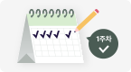
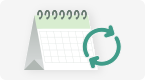

성공 확인 포인트
- 트림과 가스 배출이 편안해짐
- 잠드는 데 걸리는 시간 감소
우리 아이에게 지금 먼저 챙겨주면 좋은 포인트를 쉽게 정리했어요.
오늘부터 해볼 케어
수유 후 트림과 안정 시간을 충분히 가진 뒤 잠들도록 도와줘요.

수유 후 충분히 세워 안아줘요. 아이
반응을 보며 무리하지 않고 천천히 진행해요.

한 자세에서 불편해하면 몸을 급하게
흔들지 말고 방향을 천천히 바꿔줘요.
실행 전후 아이 표정과 보챔, 배 상태
가 어떻게 달라지는지 짧게 기록해요.
아이가 급격히 보채거나 체중 증가가 더딘 경우,
즉시 간격 조정을 중단하고 기존
패턴으로 복귀하세요.
* 이 결과는 통계적 연관/경향을 기반으로 하며, 특정 질병의 원인을 단정하지 않습니다.